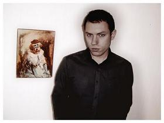

The Sound of Independent Sweden (Part Two)
In the first part of this personal exploration of Sweden's independent music scene I listed twenty-five of my favourite artists from Stockholm and the North. You can revisit those picks here. This part is dedicated to the region of the country with which I'm most familiar – the South. I've lost count of the number of times I've visited Halland, Skåne and Småland, for example. My girlfriend comes from a tiny little village called Knäred, which is in southern Halland. I doubt there's even a single band there, but I can share some hot tips from the nearest major cities – Gothenburg, Malmö, and Jönköping. I hope you enjoy discovering some of these artists as much as I did writing about them. As ever, please feel free to share your own favourites in the comments section below.
. . .
GOTHENBURG & THE SOUTH:
Gothenburg (Göteborg):
In terms of population, Sweden’s second city is about the same size of my adopted hometown of Sheffield. Both cities have thriving indie scenes and I’m sure the climate isn’t all that different. I wonder if some of these bands would consider enrolling in a No Ripcord-sponsored exchange programme. Love Is All for Little Man Tate would be a great deal, for example. It’s just an idea...
The Tough Alliance [MySpace]
The Tough Alliance’s first two albums are a stunning blend of Balearic electronica, reggae, and classic pop hooks. 2007’s A New Chance is their greatest achievement so far, and its soaring standout Looking for Gold is perhaps the finest example of the group’s strong pop sensibility. They also run the influential Sincerely Yours label, which deserves a couple of bonus marks in my book.
The Honeydrips [MySpace]
The name just screams twee-pop, but there’s more to ex-Dorotea singer Mikael Carlsson’s solo project than an admiration for jangly 80’s bands like the Field Mice. Carlsson’s pristine pop songs feature programmed beats, ominous synths, and even sampled film dialogue. I Wouldn’t Know What To Do from 2007’s Here Comes The Future does sound a bit like the Field Mice, but it’s a great song and... since when was sounding like the Field Mice a bad thing? The electro-pop gem Trying Something New is my favourite Honeydrips tune and a great starting point for newcomers to the band.
Air France [MySpace]
Those who over-indulge on the Balearic party tunes of the Tough Alliance can always turn to Sincerely Yours labelmates Air France; their gorgeous strains of ambient electronica will provide a soothing yet enjoyable soundtrack to your Sunday morning comedown. Last year’s No Way Down is the ideal starting point, in particular the sublime Collapsing at your Doorstep.
Sambassadeur [Myspace]
Sambassadeur have released two albums on the legendary Labrador label. 2005’s self-titled debut was a relatively conventional twee-pop affair, but 2008’s Migration saw the band embracing more robust production values and striving to create a more confident brand of pop music. Check out Subtle Changes and Final Say (both available on MySpace) to get an idea of what the Sambassadeur sound is all about.
Love Is All [MySpace]
Your experience of Love Is All will most likely hinge on your reaction to Josephine Olausson’s rather unique vocal stylings. I wasn’t an early admirer, I have to be honest, but 2007’s double A-side Nothing to Be Done / Ageing Had Never Been His Friend converted me. Further proof, if required, that you can’t go wrong with a decent Pastels cover.
El Perro Del Mar [MySpace]
I didn’t really enjoy last year’s one-paced From The Valley To The Stars, but I have a gut feeling that the best is yet to come from Sarah Assbring. For now, though, the strongest examples of her songwriting talent can be found on 2006’s self-titled debut, El Perro Del Mar.
Liechtenstein [MySpace]
I first encountered Liechtenstein last year when I was looking for exciting new Swedish bands to feature in a special podcast. I enjoyed all of the songs on their MySpace page, but a track called Apathy really stood out for me. I was looking forward to sharing it with the No Ripcord readers, but the podcast idea stalled and I temporarily forgot about Liechtenstein altogether. Fortunately, the band signed to the resurgent Slumberland label and released a cracking album of jangly, harmony-drenched indie-pop to significant acclaim, thus reminding of their existence and ensuring their inclusion in this article. Check them out on MySpace – Apathy remains my favourite tune, but the new material is definitely worthy of your attention.
Jens Lekman [jenslekman.com]
Like Love Is All, Jens Lekman took a little while to win me over. We published a very critical 4/10 review of Lekman’s odds and ends collection, You’re So Silent Jens, back in 2005, and I’m sure that Alan Shulman’s conclusions closely reflected my thoughts of the time. It wasn’t until November 2007, when I saw Lekman (the support act) completely upstage Josh Rouse (the unlikely headliner), that my opinion changed. I promptly fell in love with Night Falls Over Kortedala – still one of my top ten albums of the decade – and have never looked back. In my book, Jens Lekman is one of Sweden’s all-time great songwriters; I can’t wait to hear what he comes up with next.
The Soundtrack of Our Lives [MySpace]
I have to thank Magdalena and her truly awesome mixtape (see previous article) for turning me on to The Soundtrack of Our Lives back in early 2000. Sadly, TSOOL had already passed their artistic peak by this point, but as this year’s sprawling double album Communion showed, they’re still capable of the odd great song.
Wildbirds & Peacedrums [MySpace]
W&P are a phenomenal live band, but it’s in the studio that Andreas Werliin and Mariam Wallentin are at their most potent. The physical thrills of their live show are all present and correct, but there’s an added subtlety to the band’s recorded work. Wallentin’s otherworldly vocals are undoubtedly an acquired taste, but it’s hard to argue with the sheer inventiveness of the arrangements on this year’s stunning breakthrough, The Snake. There are no guitars, of course – W&P prefer to use unorthodox instruments like steel drums and autoharps – but their approach never comes across as gimmicky. Far from it in fact; this is pure soul music.
The Embassy [MySpace]
Before the Tough Alliance, Air France, and Sincerely Yours, a band called The Embassy released an album called Futile Crimes on a new label called Service that would serve as the blueprint for Gothenburg's electronic pop scene of the mid-to-late 00's. Service would go on to attain legendary status, releasing records by Jens Lekman, Studio and The Tough Alliance, but while The Embassy are undoubtedly highly rated in their native Sweden, they remain relatively unknown and unappreciated elsewhere. The band's second full-length record Tacking is now (finally) available in the UK; if there's any justice The Embassy will finally earn the acclaim that their visionary brand of electronic indie-pop warrants. At the very least, this band deserves a Wikipedia entry.
Days [MySpace]
Another difficult to Google band, Gothenburg’s Days play dreamy indie-pop without the Balearic twist that so many of their close neighbours favour. Their best music – I can recommend Simple Thing from the Downhill EP as a great starting point – evokes the naïve beauty of the Stone Roses’ early period, circa Going Down perhaps. In other words, they’re good. Very good.
Boat Club [MySpace]
A Balearic pop duo on the Luxxury label, Boat Club would sound very much at home on the Sincerely Yours roster, alongside similar acts like Air France and the Tough Alliance. I don’t know if it’s just me, but constantly describing artists from the West coast of Sweden as ‘Balearic’ is starting to feel a little ridiculous. Can’t we all agree upon a new term for this scene/genre? I’m putting forward ‘Nordicalia’ as a serious suggestion. Is anyone with me? No? Ok then.
Studio [MySpace]
I never really got into Yearbook 1 a few years back and I was actually planning on omitting Studio from my list altogether; having immersed myself so deeply in the music of the Gothenburg scene, however, I found myself re-evaluating this critically acclaimed duo. It turns out that pretty much everyone was right, after all: Yearbook 1 is an amazing album. The Studio sound borrows from a variety of genres – ambient, krautrock, 80’s pop, dance-rock, dub, etc. – and the listener is reminded of a whole host of bands, none of whom sound anything like Studio in isolation. It’s a great trick and one I’m looking forward to investigating further.
Irene [MySpace]
This Labrador band’s catalogue features two well-received albums, both of which are short, sharp bursts of summery guitar pop. There are West Coast (US), 60s pop, even lounge influences, and the essential Irene song – which combines all of these – has to be the awesome Baby I Love Your Way. And no, it’s most definitely not a Peter Frampton cover.
Audrey [MySpace]
With a name like ‘Audrey’ and a hometown like Gothenburg, you’d be forgiven for expecting twee indie-pop. The four ladies that make up the band clearly have other ideas. Audrey’s sound is much more in keeping with the post-rock genre; sparse arrangements dominate, with mournful cellos and delicate guitar lines providing an air of melancholy. It’s beautiful, fragile stuff, ideal for solitary night-time listening.
Afraid of Stairs [MySpace]
Climacophobia is the fear of climbing or falling stairs. As far as I can tell it has absolutely nothing to do with this dream-pop quintet from Gothenburg. Afraid of Stairs are clearly fond of Kevin Shields' guitar work – they admit as much on their MySpace page – but their music is far more impressive than most of the derivative music doing the rounds in the name of a shoegaze revival. There's also a dance-y element to some of the band's tunes, which helps to propel Afraid of Stairs beyond the hordes of lacklustre imitators
Malmö:
Sweden’s third largest city benefits from its close proximity to Copenhagen and mainland Europe. Trains run across the Øresund Bridge (connecting Copenhagen to Malmö) every twenty minutes or so, and it’s so convenient that my trips to Sweden almost always tend to involve a flight from the UK to Copenhagen’s Kastrup airport. I’m reasonably familiar with the beautiful coastal city of Malmö, although it’s been a while since I spent any significant length of time there. Like Gothenburg to the North, it has a strong musical tradition, as evidenced by this diverse array of artists.
The Ark [MySpace]
There’s nothing particularly complex about The Ark’s music. The band specialises in glam-influenced pop, a lot of which is fairly unimpressive to be honest. So why are they included here? The answer lies in the strength of their singles. Having visited Sweden a number of times in the last ten years, I’ve been exposed to a lot of Swedish radio* and a fair bit of music television. The Ark have released four #1 albums in this time frame; hit singles such as It Takes a Fool to Remain Sane (Stockholm, 2000), Father of a Son (Laholm, 2002) and The Worrying Kind (various places and the Eurovision Song Contest, 2007) have provided light relief throughout my travels.
* Swedish public radio is actually pretty amazing. P3 is my personal favourite for indie/rock stuff, but you have to catch it at the right time. You can listen to it online here.
Moonbabies [MySpace]
In the Spring of 2000 I received an enormous parcel from Vicenza in Italy. The sender was one Alessandro Crestani, a passionate indie music fan who to this day continues to run the cassette tape label, Best Kept Secret. I can remember two of the tapes inside the package quite vividly; one was an engaging album of lo-fi pop by Aberdeen, Scotland's Vinyl Bill; the other was the Moonbabies' Climbing Up These Miles. Having initially started out as a dreamy shoegaze-influenced act, Moonbabies have evolved into a more complex and polished pop act. Nearly ten years on from my initial encounter with them, they're in Berlin working on their fourth album proper. I doubt this one will be available on cassette.
The Radio Dept. [MySpace]
The Radio Dept. formed in Lund but the band’s MySpace page suggests they're currently based between Malmö and Stockholm, hence their inclusion here. The Radio Dept. remain best known for their 2003 debut, Lesser Matters, which was released on the flawless Labrador label in Sweden; this became such a sleeper hit that it even cracked the top ten of NME’s Top 50 Albums of 2004. 2006’s Pet Grief fared less well critically, but the band remains one of Sweden’s most popular International exports and the upcoming Clinging to a Scheme is one of the most hotly anticipated Swedish releases of 2009.
The Envelopes [MySpace]
The Envelopes don’t sound particularly Swedish. They have two lead singers; one (Audrey Pic) is French and the other (Henrik Orrling) sounds a little bit like Frank Black when he screams. Nevertheless, the band is predominantly Swedish and certainly worthy of inclusion here. The Envelopes’ musical palette is fairly broad, and the band can turn out a quirky Francophile pop tune (Audrey in the Country) just as comfortably as they can a Pixies-influenced indie-rocker (Sister in Love). It’s compelling stuff, and well worth a listen.
A Smile and a Ribbon [MySpace]
It really doesn't get much more twee than this. (Don't tell me you expected black metal from a band called A Smile and a Ribbon?) If you've followed this feature closely from the very beginning you may well have overdosed on twee-pop a few entries ago – hey, there would be worse ways to go – but admirers of naïve, jangly indie music in its purest form will find a lot to love hear. Granted, it's not what you'd want blasting out of the car stereo when you pull up alongside a car full of malevolent youths at the traffic lights, but the gorgeous melancholy strains of songs like Baby's Breath undoubtedly have their place. In my collection, anyway.
Band in a Box [MySpace]
A confession: I hadn't heard of Band in a Box until I started researching this feature. I stumbled upon this curious sounding project, which is essentially a solo vehicle for Siri af Burén, by searching for Malmö based artists on MySpace. Needless to say, I was immediately very pleased with myself for discovering such a unique talent. Band in a Box's music features a revolving cast of assorted string instruments, some gentle electronic flourishes, and Siri's delicate female vocal. It's a timeless, intimate brand of pastoral folk music, which is nothing short of stunning. It also sounds totally unlike any other artist featured here. Check it out.
Jönköping:
Jönköping is situated on the southern tip of Vättern, Sweden’s second largest lake. It’s about 140km east (therefore inland) of Gothenburg and I’ve never visited the place, which is why you’re reading such a banal introduction.
The Cardigans [MySpace]
I used to think of The Cardigans as a singles band; they are, after all, responsible for two of the more memorable pop tunes of the mid-to-late 90’s in Lovefool and My Favourite Game. It wasn’t until last year’s Best Of that I realised just how significant their contribution to Swedish music over the last fifteen years has been. In a varied career, they’ve tried their hand at jangly indie (Rise and Shine), polished pop (Erase/Rewind), and latterly mature country-tinged rock (You’re the Storm); they’ve even covered Talking Heads with Tom Jones! Crucially the quality of the band’s output has remained high, even if the sales figures haven’t been able to match those of 1998’s Gran Turismo. Write them off at your peril.
Loney Dear [MySpace]
Emil Svanängen is now five albums into his career as Loney Dear. I wasn’t overly impressed by this year’s Dear John, and I think got a bit carried away when I awarded 2007’s Loney, Noir re-issue a generous 8/10, but he’s certainly recorded some fantastic songs over the years (I Am John is a personal favourite). Svanängen might lack the variety, humour and consistency of his compatriot Jens Lekman, but he’s undoubtedly one of the more talented European singer-songwriters working today.
. . .
31 July, 2009 - 21:53 — David Coleman